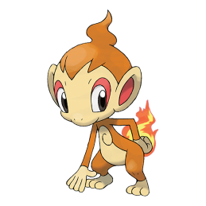
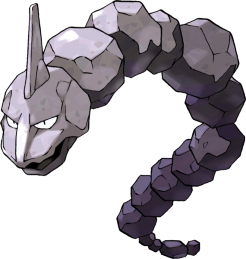
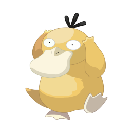

-
Pikachu
HP 300

Descrição
Os Pikachus são pequenos roedores de quarenta centímetros e de seis quilogramas, com um corpo redondo, pernas curtas e uma longa cauda, quando macho, a cauda tem um formato de um raio, mas se o Pikachu for fêmea sua cauda ganha um coração na ponta.
-
Charizard
HP 800

Descrição
Geralmente, um Charizard é competitivo. Ele adora a batalha e seu espírito competitivo também é notável, uma vez que nunca vai cuspir fogo em um inimigo mais fraco a menos que provocado ou ordenado. Quando fica muito irritado, as chamas em sua cauda se tornam branco-azuladas.
-
Mewtwo
HP 1200

Descrição
Mewtwo foi criado geneticamente em um laboratório, sendo um clone do misterioso antigo Pokémon Mew. É uma criatura com uma postura humanóide, mas tem algumas características felinas.
-
Chimchar
HP 600
Descrição
Chimchar são Pokémons chimpanzés, com principalmente um tom de laranja, mas com a luz amarela em seu rosto, orelhas externas, mãos e pés. As chamas em suas partes traseiras são produzidas pela queima de gás em seus estômagos.
-
Onix
HP 800
Descrição
Onix se assemelha a uma cadeia gigante de pedras cinzentas, com uma coluna rochosa em sua cabeça. Este Pokémon tem um ímã em seu cérebro que serve como uma bússola interna.
-
Psyduck
HP +8000
Descrição
Psyduck é constantemente espantado com a sua dor de cabeça. Geralmente fica imóvel, com uma expressão vazia, tentando acalmar a sua dor de cabeça. No entanto, quando a sua cabeça se torna muito grave, que alivia a tensão sob a forma de fortes ataques psíquicos.